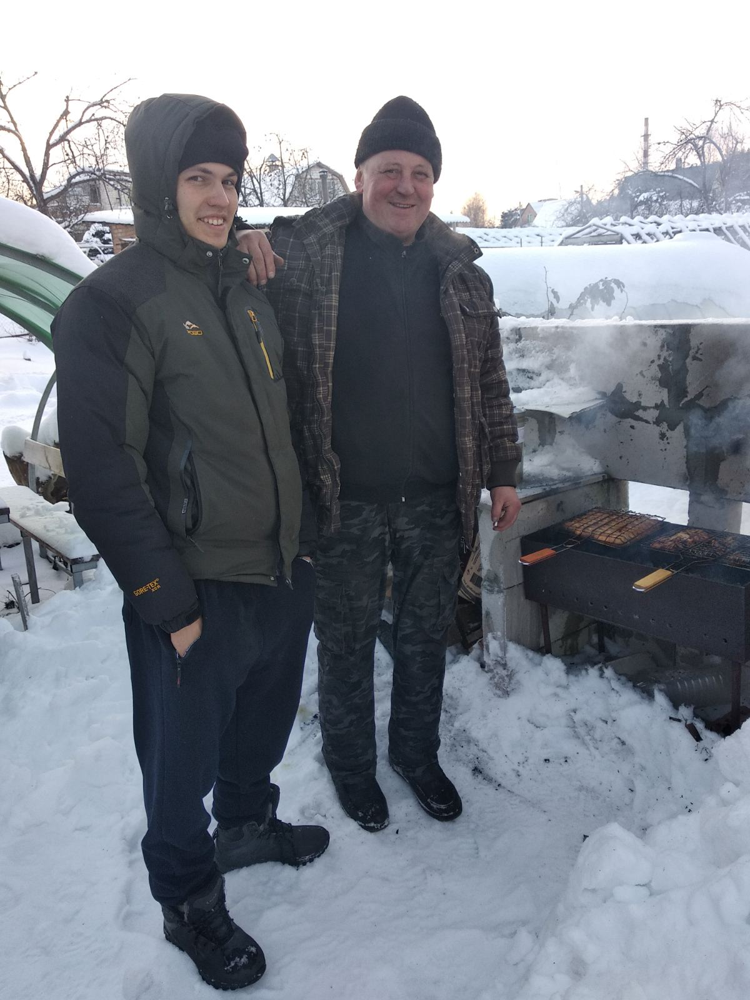
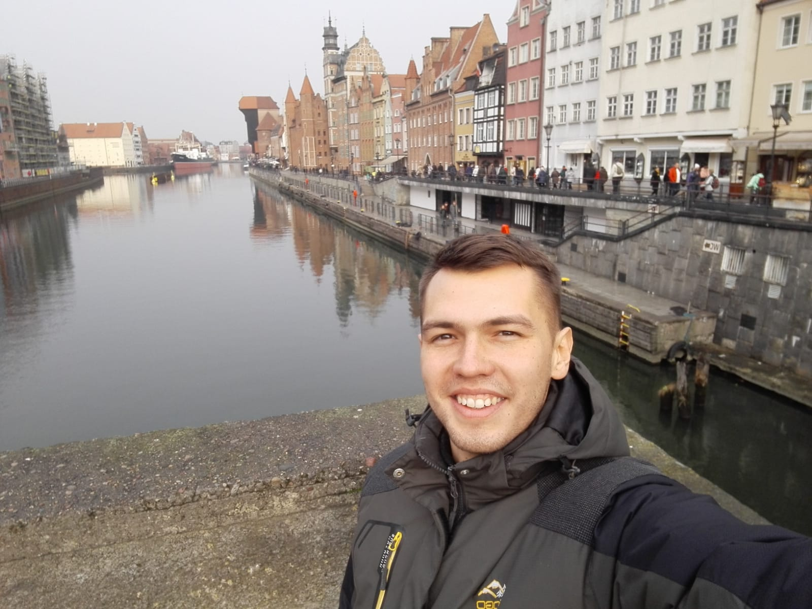
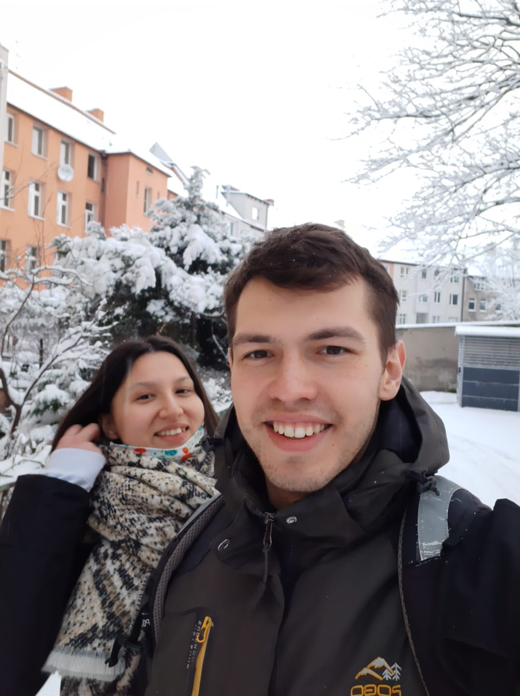
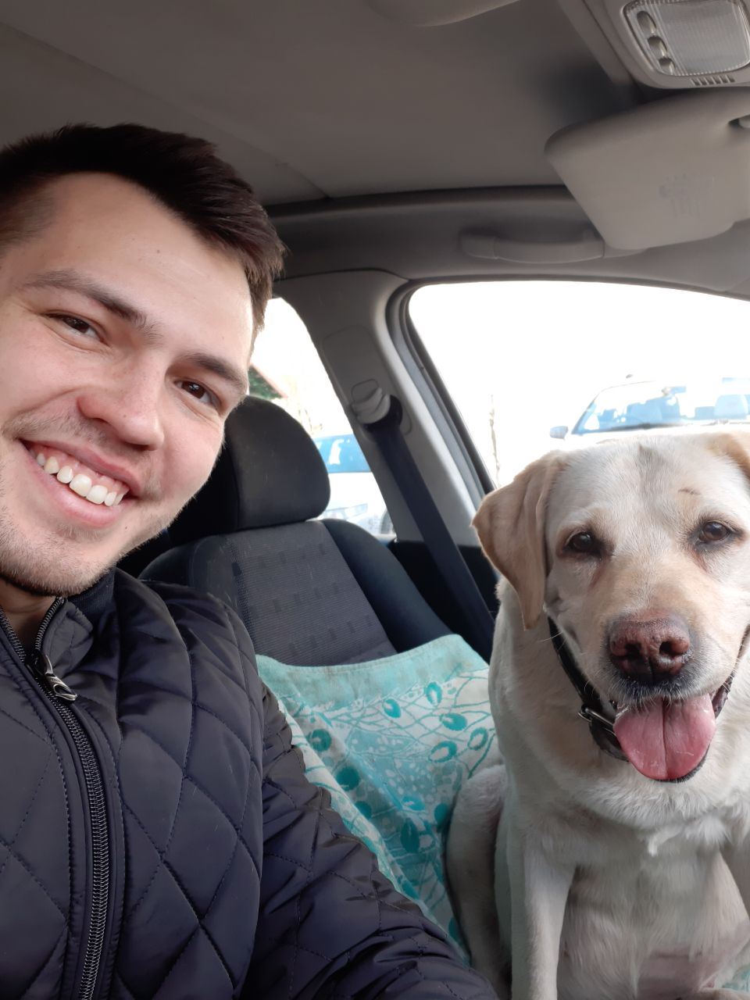

O mnie




Nazywam się Andrei, jestem z Białorusi, a dokładniej z Grodna. Jednak od dwóch lat mieszkam i pracuję w Gdańsku (zawsze chciałem mieszkać nad morzem). Ukończyłem uniwersytet na Białorusi na kierunku marketing, ale w Gdańsku pracuję jako instalator urządzeń telekomunikacyjnych. Równolegle chodzę na kursy programowania w InfoShare Academy.
W ciągu tych dwóch lat życia w Polsce pojawili się nowi znajomi, przyjaciele i dziewczyna. Moja dziewczyna ma na imię Anastazja i pochodzi z Ukrainy.
Moi rodzice i brat zostali na Białorusi, myślą o przeprowadzce do Gdańska.